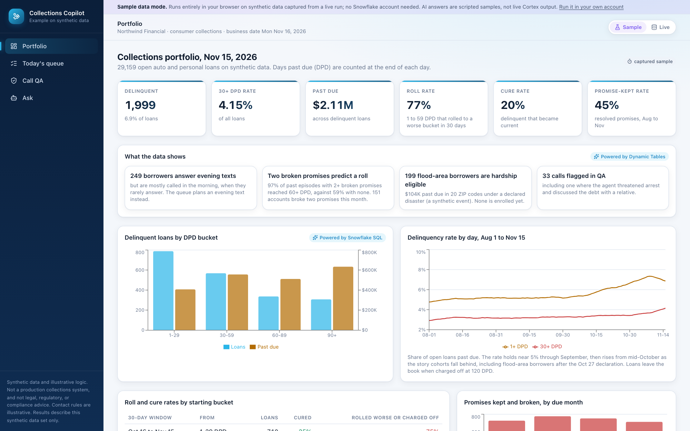
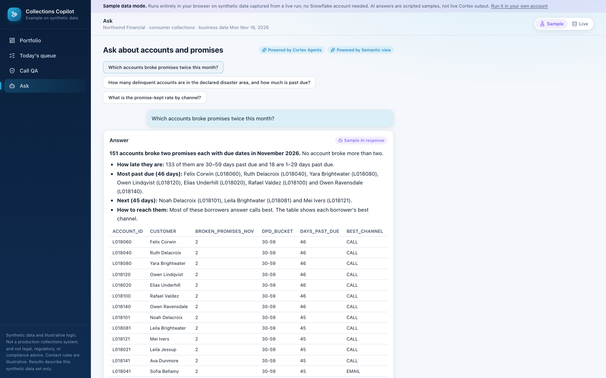

Contact the right borrowers first, on the channel they answer, with an offer that fits
A collections team starts each morning with more delinquent loans than it can reach. This example ranks today’s accounts by roll risk and expected recovery, plans each contact on the channel and time the borrower actually responds to, flags hardship eligibility, tracks contact-frequency limits, and drafts an empathetic conversation guide. A QA screen reviews call transcripts for compliance. Model training, scoring, the queue, and the AI all run in Snowflake on the same data.
Synthetic data, illustrative logic. Not a production collections system, and not legal, regulatory, or compliance advice. Contact limits and hardship rules here are illustrative. Every name, loan, and call is invented. Results describe this synthetic data set only.
What collectors can do
Five screens cover the daily workflow. The synthetic data has four planted stories so the walkthrough has something to find.
See the portfolio
Loans by days-past-due bucket, the delinquency trend, roll and cure rates over two 30-day windows, and the promise-kept rate.
Work today’s queue
Accounts ranked by expected recovery times roll risk, with the best channel and time, a suggested offer, and calls used against the limit.
Open an account
Delinquency history, promises, contact attempts, reach rate by channel and time, hardship eligibility, and a contact-limit tracker.
Prepare the conversation
AI_COMPLETE drafts a guide with the required disclosure, an offer, objection handling, and what to avoid, for the collector to review.
Act, within the rules
Log a promise, request a hardship enrollment, or schedule the next contact. A call past the illustrative 7-in-7 limit is refused.
Review calls and ask
Transcript QA flags missing disclosures, threats, third-party talk, and abuse, with coaching notes. A Cortex Agent answers questions in plain language.
Walkthrough
Screenshots of the running app in Sample mode. Every number comes from the synthetic data set, and the AI text was captured from a live run.




How it works in Snowflake
| Step | Snowflake capability | What it does here |
|---|---|---|
| Features | Dynamic Tables | Point-in-time features per account (days past due, promises made, kept, and broken, reach rate, calls in 7 days, days since payment) and a contact profile of reach rate by channel and time of day, refreshed daily |
| Model | Snowpark ML and the Model Registry | XGBoost trained in a Snowpark Python procedure to predict a roll to 60+ days past due, registered as ROLL_RISK_XGB, and run in batch on today’s accounts. A daily task (created suspended) rescores. |
| Queue | Dynamic Tables | TODAY_QUEUE ranks accounts by expected recovery times roll risk and adds the contact plan, hardship eligibility, offer, and call count |
| Conversation guide | AI_COMPLETE | Drafts a guide from the account facts on screen |
| Call QA | AI_CLASSIFY, AI_COMPLETE | Multi-label conduct review of every transcript and coaching notes for flagged calls; a phrase rule checks the disclosure |
| Ask | Cortex Agents, semantic views | Answers questions with SQL that Cortex Analyst generates over COLLECTIONS_SV |
The 7-calls-in-7-days limit and the hardship rules are illustrative. Replace them with your own state, product, and policy rules before relying on the queue.
Run it
Sample mode, no account
git clone https://github.com/sfc-gh-ooral/sfguide-collections-copilot.git
cd sfguide-collections-copilot
npm install
npm run devOr open the hosted example. AI answers are labeled Sample AI response.
Live mode, your account
- Run
sql/setup.sqlin a Snowsight worksheet as ACCOUNTADMIN. It creates its own database, an XSMALL warehouse, and a least-privilege role. - Set up key-pair auth and copy
.env.exampleto.env.local. npm run devand switch the header to Live.- When you’re done, run
sql/cleanup.sql.
The README lists every object created, measured cost and time, known limitations, and Cortex Code prompts to adapt it to your own servicing data and contact rules.